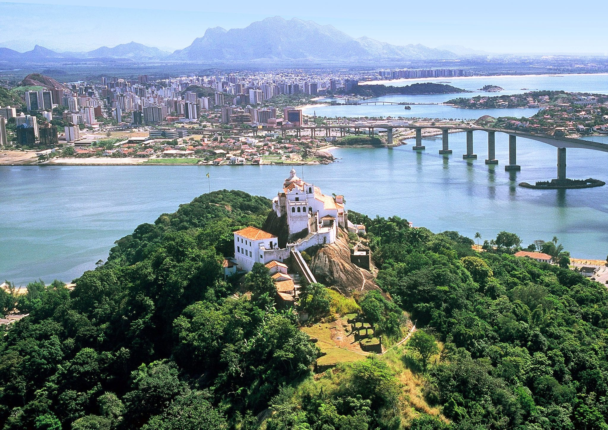

Vila Velha é o município mais antigo do Espírito Santo, onde a história capixaba começou em 1535. Banhada pelo Oceano Atlântico, a cidade combina o charme de suas praias famosas, como a Praia da Costa e Itapuã, com uma rotina urbana vibrante e moderna.

O grande símbolo da cidade é o Convento da Penha, imponente santuário construído no topo de um penhasco de 154 metros de altitude no século XVI. Além de sua relevância histórica e religiosa, o local oferece uma das vistas panorâmicas mais bonitas da Grande Vitória, de onde é possível contemplar o mar, a Terceira Ponte e o contraste perfeito entre a natureza e o progresso da região